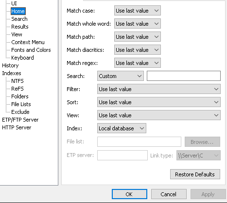

Welcome to TaskViewer
TaskViewer is a lightweight, fast, and resource-friendly process monitoring tool for Windows.
Download TaskViewer
Features
- Small installation file
- Clean and simple user interface
- Quick file indexing and real-time search
- Fast startup and minimal footprint
- Low memory and disk usage
- Compact, efficient database
- Real-time process updates
- System tray minimization
- Silent background operation
- Supports command-line launch
- Customizable refresh intervals
- Portable mode — no install required
About
TaskViewer gives you real-time insight into all active processes on your system. It’s designed for users who value simplicity, speed, and control, with a zero-clutter interface that just works.